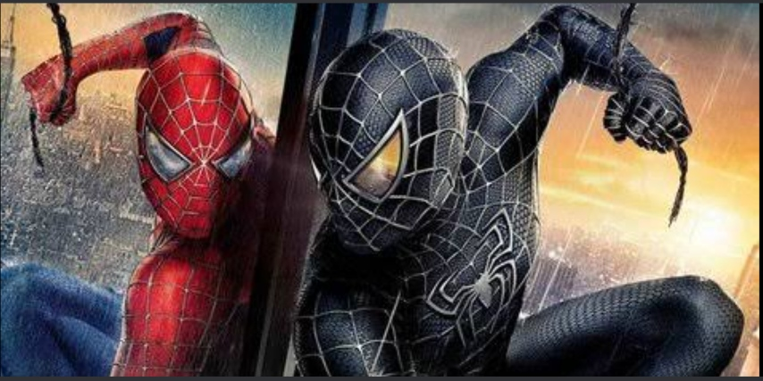

Mi heroe
yo no es que tenga muchos heroes favoritos, de pequeño consideraba
que mis padres eran mis heroes, pero conforme fui creciendo me di cuenta
que mis padres son un ejemplo a seguir unos idolos mas que unos heroes
pero si puedo decir un heroe que me guste por encima de otro dada la creencia
popular sin duda alguna es spiderman ya que me llama la atencion de como es el
diseño de sus trajes y sus habilidades
